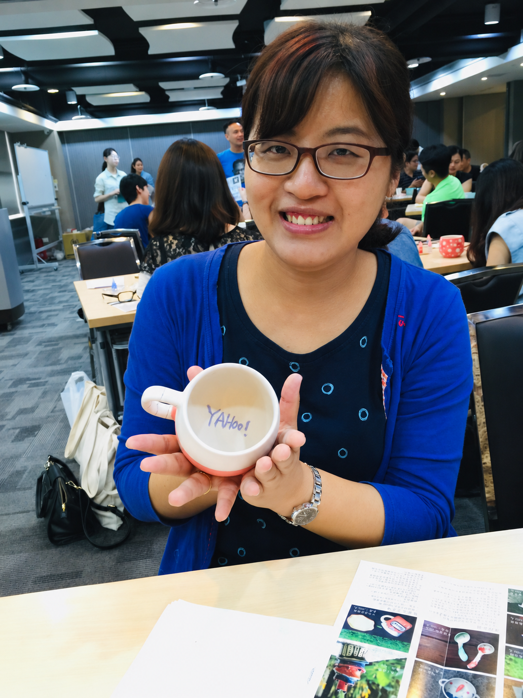
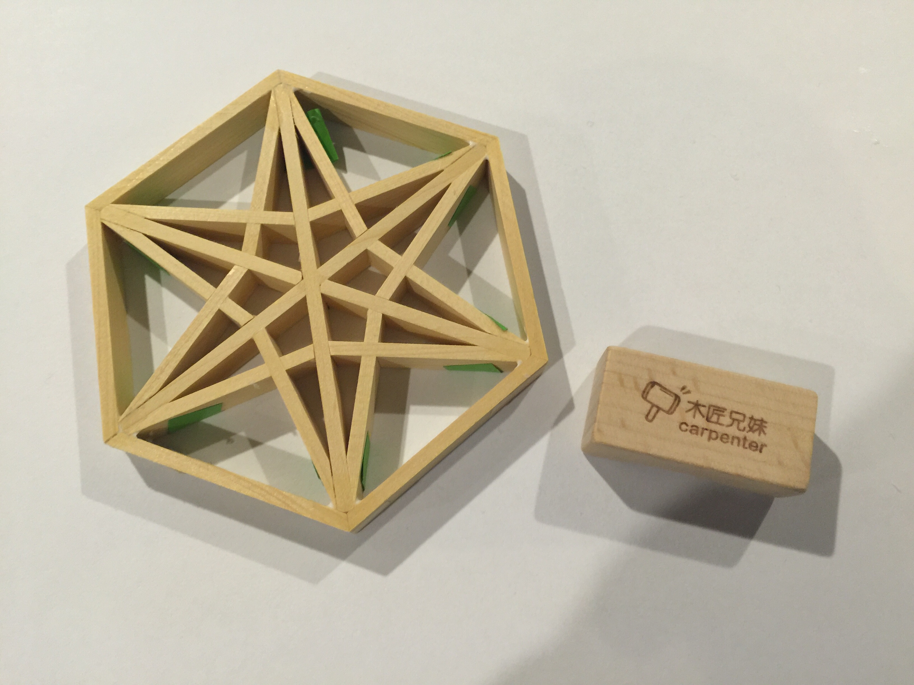
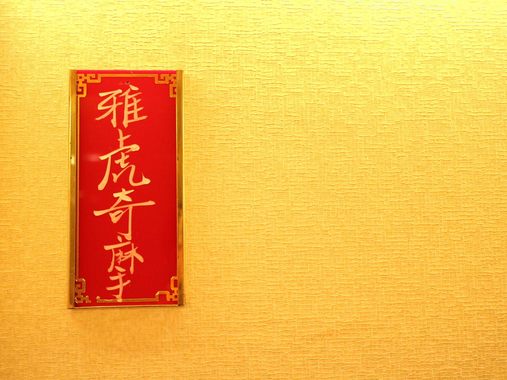
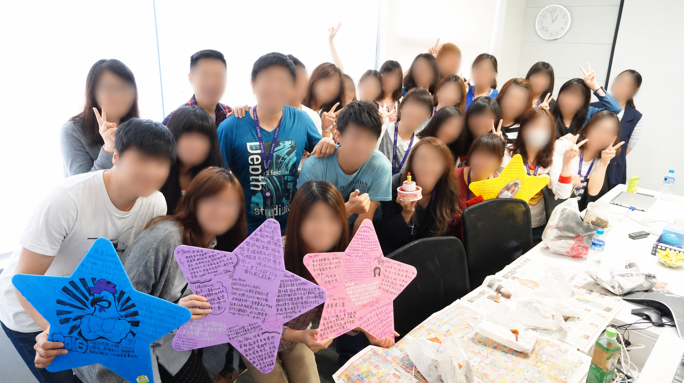
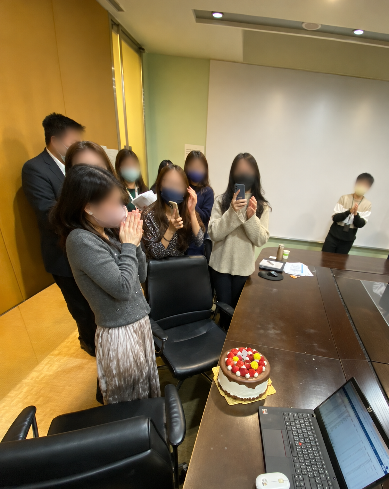
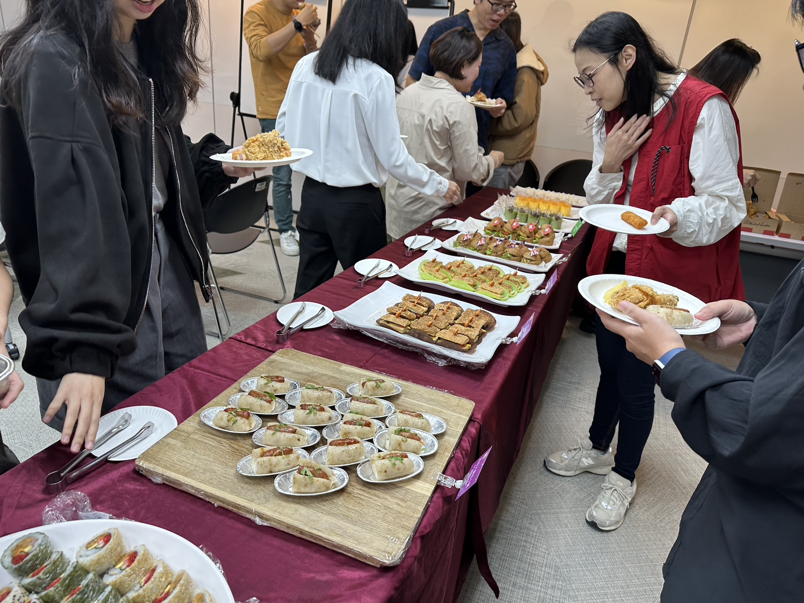
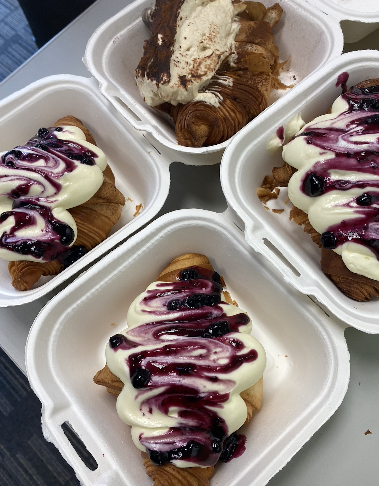
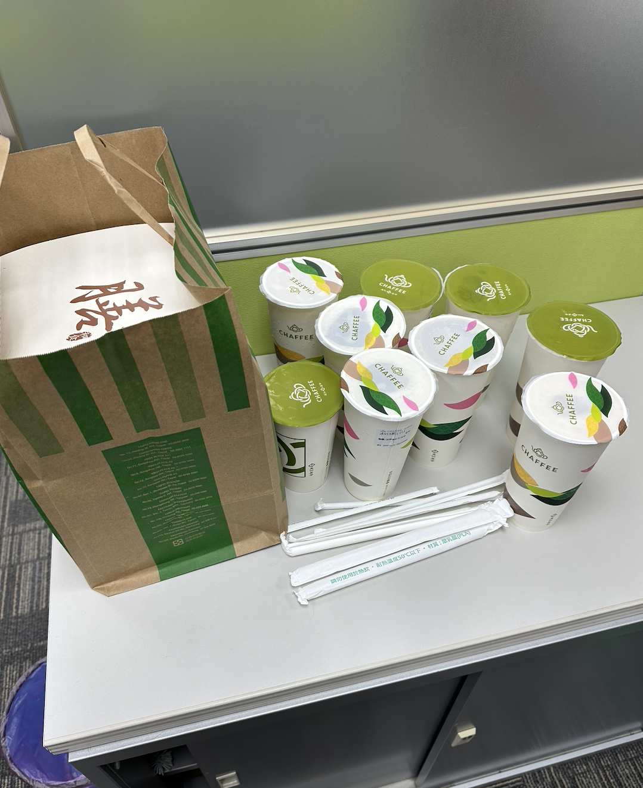

01
一起動手，也一起交流
籌辦部門 Team Building，透過手作活動，讓同事在工作之外一起動手、交流，留下共同的回憶。
你好，我是吳佩芸。
具十年以上數位與整合行銷經驗。 運用數據釐清問題，整合內外部資源， 推動品牌、會員與服務專案。
閱讀我的專案 ↘SELECTED WORK
從品牌溝通到流程改善，
每一項工作，都從理解問題開始。
ABOUT ME
我的經驗橫跨數位媒體、課程推廣、數位平台居家服務及房仲服務。
從Yahoo的數位廣告優化，到功學社的招生行銷與陌生異業合作，再到信義房屋的會員、品牌及分店資源管理，我習慣先觀察過往數據、理解目標與需求，再找出可執行的做法。
我喜歡分析資料，耐心分析龐大數據，也擅長走進溝通與執行的細節，勇於溝通。無論是尋找合作窗口、協調多方意見，或改善繁複作業，都會主動跟進，讓計畫持續往前。
EXPERIENCE
銘傳大學 應用中國文學系｜輔修商業設計｜2004–2008
LIFE WITH THE TEAM
除了行銷與專案工作，我也長期參與部門經營，籌辦 Team Building、慶生會、部門尾牙、退休歡送會，以及午茶與互動遊戲。我喜歡思考怎麼讓大家願意參與、自在交流，讓忙碌的工作日常，也有一起慶祝、放鬆與留下回憶的時刻。
左右滑動，看看團隊日常



籌辦部門 Team Building，透過手作活動，讓同事在工作之外一起動手、交流，留下共同的回憶。


籌辦部門慶生會，讓忙碌的工作日常，也有一起慶祝、留下回憶的時刻。

籌辦同事退休歡送會，讓大家在工作之外相聚，為共事的日子留下溫暖的回憶。


安排部門午茶與點心，讓忙碌的午後，也有一起休息、聊聊的片刻。
LET’S CONNECT
期待將過往累積的行銷經驗、專案推動能力與數位工具應用，投入新的工作挑戰，持續拓展專業，與團隊共同達成目標。
wandererwuu@gmail.com ↗PROJECT 01 / 雇主品牌 / 整合行銷
將集團四大面向轉化為概念服飾與AI試衣體驗，讓Gen Z世代認識信義企業集團的多元樣貌。
此專案為行銷主導，人資協作的跨部門合作，聚焦AI房產科技、地方創生、觀光旅遊與永續發展四大特色，拓展年輕世代對信義企業集團的認識。
擔任主PM，從提案方向、代理商遴選，第一階段是6月28日104實體招募活動，第二階段則是8月的〈AI試衣間〉線上活動，全程主導協調與推進。
與合作代理商定案後，距實體活動僅剩約一個月時間，我必須整合內部與外部夥伴意見，推進實體服裝製作、現場活動規劃與宣傳內容定案。四套服飾分別以科技、熱情、風景與永續呈現品牌理念，後續並透過AI試衣間線上活動延伸參與。
依網路聲量監測平台統計，正面聲量目標達成率為115.4%，超過原訂目標15.4%。
PROJECT 02 / 資源管理 / 流程改善
統籌約500間分店及品牌公關需求，溝通協調全台六家廠商執行，並確保預算及效益評估。
原作業仰賴人工聯繫與逐件處理，全臺約有500間分店的業務、店長與秘書皆可能提出需求，妥善並及時處理電話及訊息回覆。
由我一人負責全權事項，包含供應商開發維繫、內部教育宣傳、分店需求協調、租借調度安排與請款，公關帳篷安排，規劃新聞稿曝光內容，每年處理約500–600次租借數。
建置年度總表，掌握每月費用與案件狀況，於分店申請時討論及評估需求，每年進行2–3次費用核算與效益討論，並進入高層會議報告。
設定EXCEL巨集工具，整合六家廠商請款內容並建立查核工具，減少人工反覆彙整與核對作業。
PROJECT 03 / 會員經營 / 活動企劃
以轉盤抽獎與居家優惠帶動信義房屋成交會員回訪，並在執行過程持續優化。
邀請歷年成交客戶回訪網站，增加信義居家合作品牌曝光，建立後續服務接觸機會。活動期間為 2024/5/9–6/20。
統籌企劃、UI／UX 溝通、宣傳與結案。透過 APP、簡訊與站內版位邀請會員，登入票券匣後前往官方 LINE 抽獎。
發現 APP 登入會員找不到抽獎入口後，再調整新增票券匣抽獎券入口，調整後再增加 153 位參與者。
共有813位成交會員參與，其中550位為官方LINE新加入用戶。活動上線當月，信義房屋官網會員票券匣瀏覽人數較上月成長 98%；瀏覽量成長166%。
PROJECT 04 / 服務方案 / 商業評估
分析客戶回饋與購買數據，規劃周周清、雙周清方案，結合分潤協商與損益評估。
透過固定頻率與包套優惠，提高有清潔需求客戶的購買頻次與持續使用意願，增加服務收入。
分析過往客戶意見、訂購與續購數據，規劃方案與優惠，協商合作廠商服務及分潤，試算客戶終身價值（LTV）與損益。客戶可於平台選擇頻率，刷卡或匯款購買。
2023/1/1–6/21新客戶體驗成件率約75%，正式訂閱轉換率 25.7%(未計入舊客)。
PROJECT 05 / 陌生開發 / 合作洽談
皆由陌生開發開始，獨立促成不同檔期的影音品牌合作。
為拓展成人音樂學習市場，從影音使用者的興趣出發，尋找與音樂課程具有連結的合作品牌。
獨立負責提案、洽談與執行。初期難以接觸合適窗口，我持續詢問與跟進，再以雙方客群需求提出資源互惠方式，最終促成合作。
・KKBOX提供七日體驗及KKBOX KIDS十四日體驗序號，功學社提供課程體驗優惠。 ・friDay影音合作交換七日體驗序號與課程優惠，連結影音興趣及鋼琴學習。
依專案優惠使用紀錄追蹤，KKBOX體驗後轉正式新生轉化數21%。